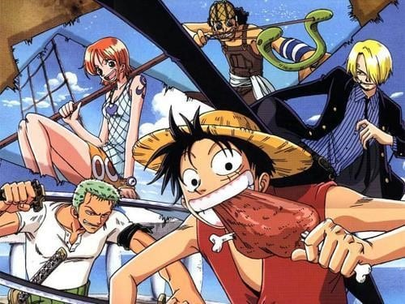
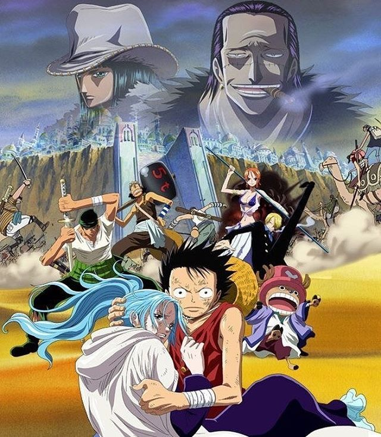
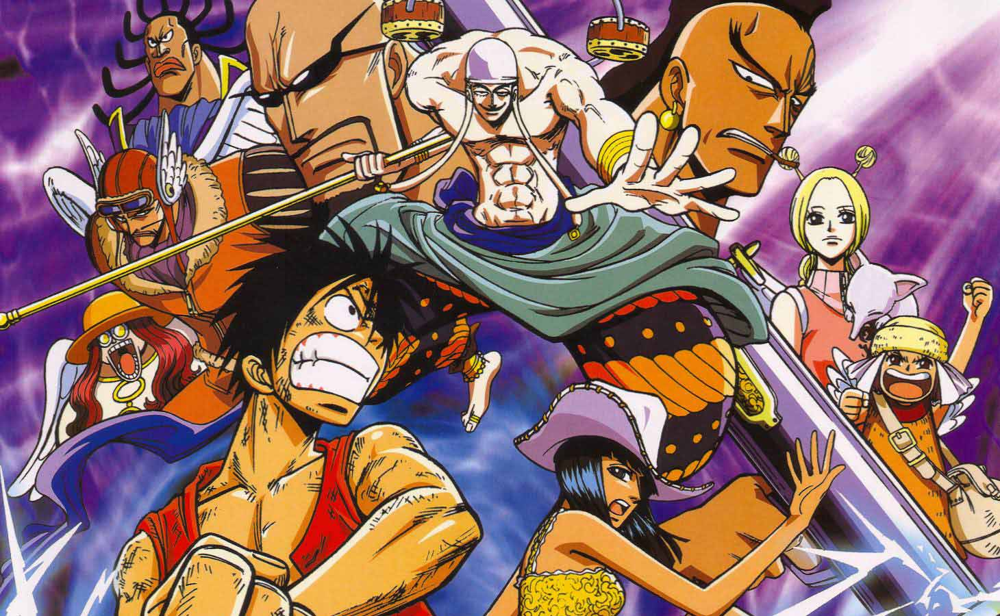
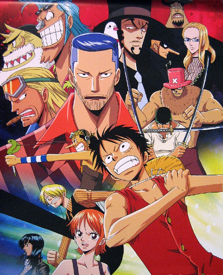
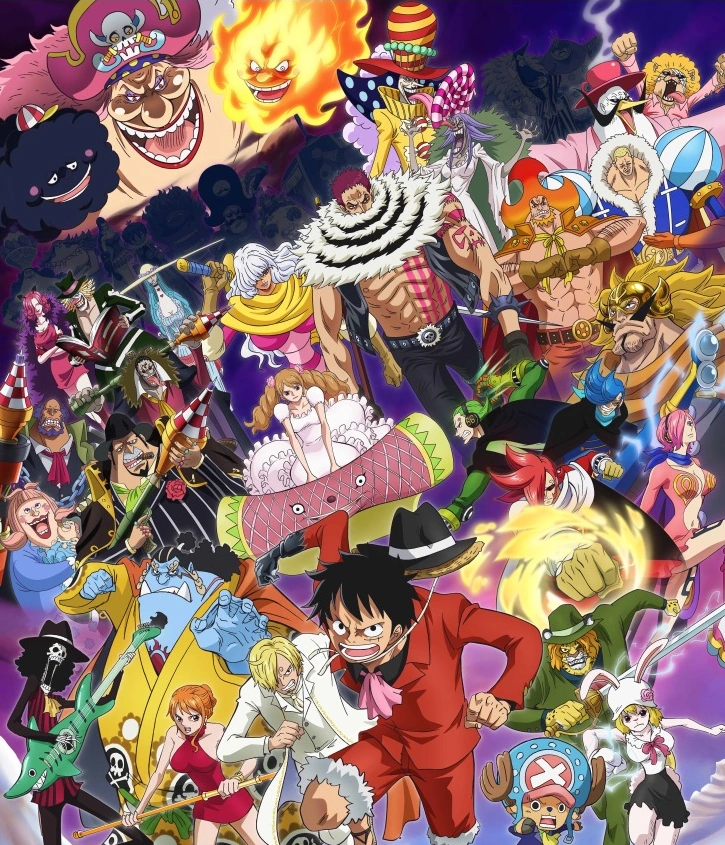
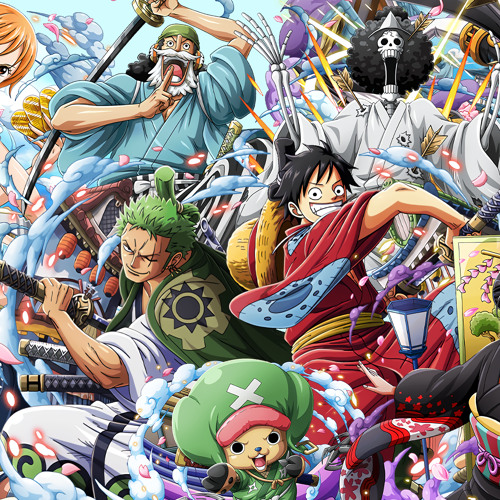

Principais Arcos
-

East Blue
Onde tudo começa. Apresenta os personagens principais e as primeiras aventuras de Monkey D. Luffy e sua tripulação.
Do episódio 1 ao episódio 60
-

Alabasta
Luffy e sua tripulação vão para Alabasta para ajudar a princesa Vivi a combater um plano de conspiração e salvar o reino.
Do episódio 61 ao episódio 135
-

Skypiea
A tripulação de Luffy viaja para uma ilha flutuante chamada Skypiea, onde encontram deuses e enfrentam desafios épicos.
Do episódio 136 ao episódio 206
-

Water 7 e Enies Lobby
Os Chapéus de Palha enfrentam a CP9 e lutam para resgatar Nico Robin, membro da tripulação, em uma cidade aquática e em uma base do Governo Mundial.
Do episódio 207 ao episódio 325
-

Marineford
A guerra entre os Piratas do Barba Branca e a Marinha atinge seu auge, com Luffy e seus aliados se envolvendo na batalha.
Do episódio 326 ao episódio 628
-

Dressrosa
Luffy e sua tripulação chegam à ilha de Dressrosa, onde se envolvem em uma conspiração e lutam contra o poderoso Doflamingo.
Do episódio 629 ao episódio 746
-

Whole Cake Island
Os Chapéus de Palha vão para a ilha Whole Cake, onde tentam resgatar Sanji do casamento arranjado com a família Charlotte.
Do episódio 747 ao episódio 889
-

Wano
A tripulação de Luffy chega à ilha de Wano e se envolve na luta contra o tirano Kaido e seu grupo de piratas.
Do episódio 890 até a atualidade...